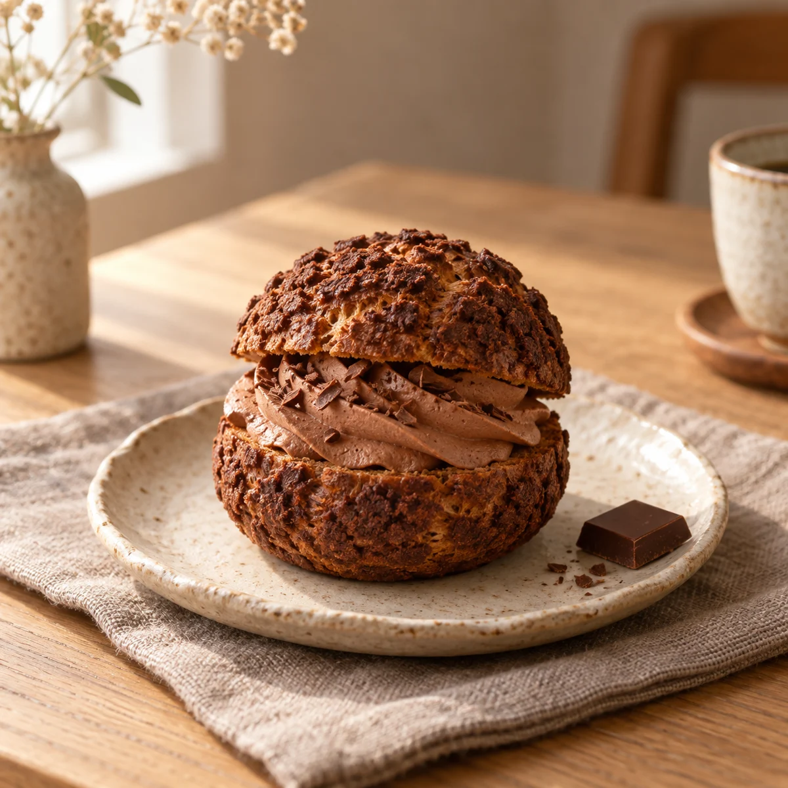
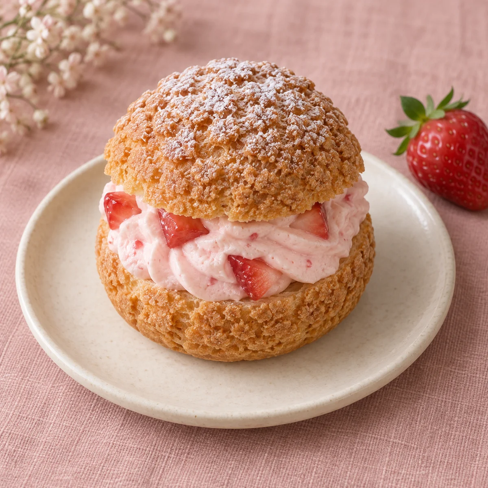

定番のご提案
定番のご提案SIGNATURE
いつものカスタード
¥320（税込・仮）香ばしいシューに、なめらかなカスタード。
何度でも会いたくなる、私たちの定番。
素材・おいしい食べ方
冷蔵庫で冷やし、召し上がる少し前に取り出す食べ方をご提案しています。
【要確認】原材料・アレルゲン・保存方法・消費期限は、実際の商品仕様に合わせて掲載します。
OUR CHOUX
いつものおいしさと、季節の楽しみ。ひとつずつ、選ぶ時間も。
定番のご提案SIGNATURE
香ばしいシューに、なめらかなカスタード。
何度でも会いたくなる、私たちの定番。
冷蔵庫で冷やし、召し上がる少し前に取り出す食べ方をご提案しています。
【要確認】原材料・アレルゲン・保存方法・消費期限は、実際の商品仕様に合わせて掲載します。

定番のご提案CHOCOLATE
カカオの香りと、ふんわりクリーム。
ほっとひと息つきたい日のごほうびに。
冷蔵庫で冷やし、召し上がる少し前に取り出す食べ方をご提案しています。
【要確認】原材料・アレルゲン・保存方法・消費期限は、実際の商品仕様に合わせて掲載します。

季節のご提案SEASONAL
甘酸っぱいいちごと、やさしいクリーム。
春をほおばる、季節のシュークリーム。
冷蔵庫で冷やし、召し上がる少し前に取り出す食べ方をご提案しています。
【要確認】原材料・アレルゲン・保存方法・消費期限は、実際の商品仕様に合わせて掲載します。
掲載内容は架空の商品提案です。価格は税込の仮設定、いちごは春季商品のイメージです。実際の品揃え・販売時期・アレルゲン等は【要確認】です。
GOOD TO KNOW
【要確認】ギフトボックスの有無・料金・個数に合わせてご案内します。
【要確認】予約方法・受付時間を店舗さまに確認してから掲載します。このデモではご予約は受け付けていません。
【要確認】商品ごとの原材料と製造環境を確認し、正確な情報を掲載します。デモ画像から原材料は判断できません。